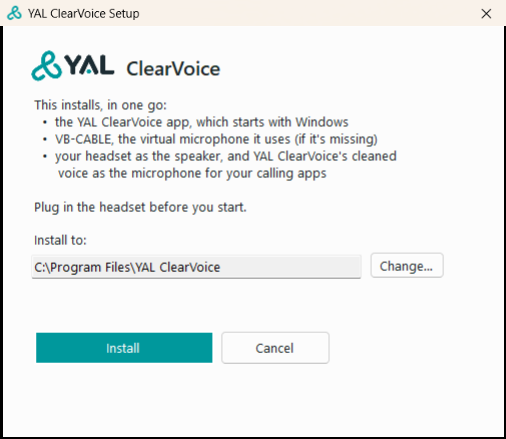
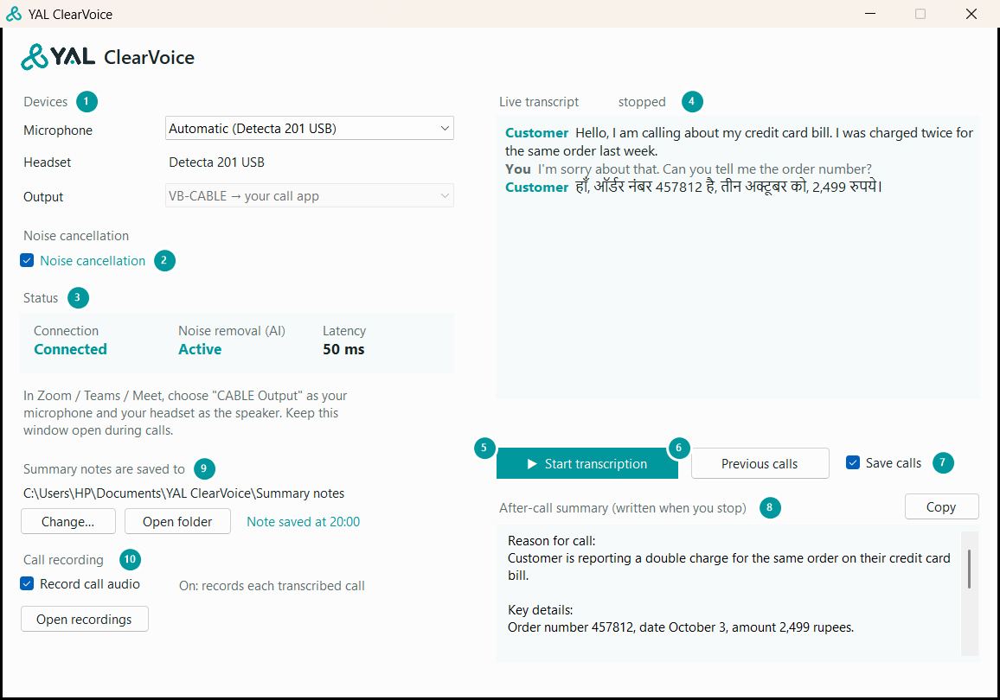
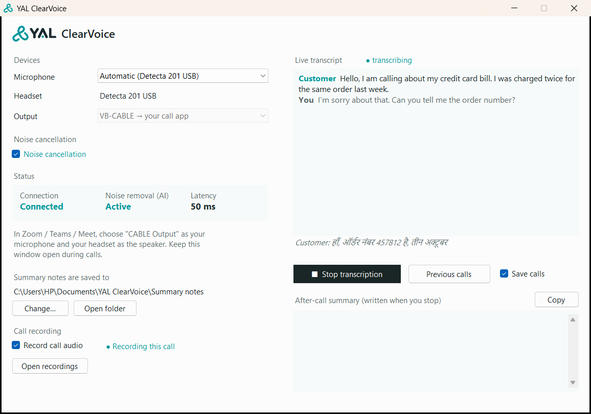
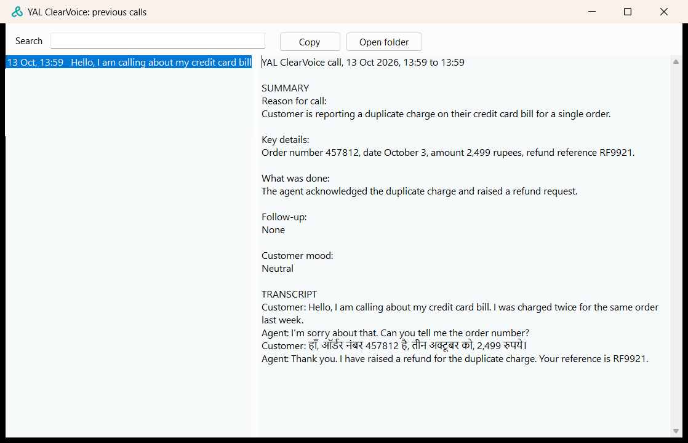

YAL ClearVoice removes background noise from your voice on every call. It can also write down a call as it happens, save a short summary note when you're done, and record calls. This guide covers everything, from installing it to fixing problems.
Do this once on each PC. It takes a few minutes and sometimes one restart.
A Windows 10 or 11 PC (64-bit), and an administrator account on it. Windows asks for permission once.
The agent's USB headset, plugged in. Setup picks it up by itself.
The file YAL ClearVoice Setup.exe (about 14 MB), from the link you were sent.
The calling software (softphone, dialer, Zoom, Teams) closed, if it's open.
Download YAL ClearVoice Setup.exe. Your browser saves it in the Downloads folder.
Open Downloads and double-click YAL ClearVoice Setup.exe.
If you see Windows protected your PC, click More info, then Run anyway.
When Windows asks Do you want to allow this app from an unknown publisher to make changes to your device?, click Yes. If it asks for a password, use the administrator's.
In the setup window, click Install.
The app goes in C:\Program Files\YAL ClearVoice. To put it somewhere else, click Change… first and choose a folder; setup makes a YAL ClearVoice folder inside it.

If Windows asks Would you like to install this device software? from VB-Audio, click Install. This is VB-CABLE, the virtual microphone YAL ClearVoice uses.
Wait while setup works. It shows each step underneath. Don't close the window.
If setup says Restart the PC to finish setting up VB-CABLE, save any open work and click Restart now. If it says YAL ClearVoice is installed, click Open YAL ClearVoice.
The YAL ClearVoice window opens by itself after you sign in to Windows.
Under Status, Connection says Connected and Noise removal (AI) says Active.
Next to Headset is the headset's name, for example Detecta 201 USB.
Make a test call. The other person should hear you clearly, without the office noise.
Double-click the new YAL ClearVoice Setup.exe and click Install. It closes YAL ClearVoice if it's open and updates the copy that's already installed, in the same folder.
Click Open YAL ClearVoice when it's done.
Saved calls, summary notes and recordings are kept. Updating doesn't change your calling software's settings.
Do this once, in the audio or device settings of the software you take calls in:
| Setting | Choose |
|---|---|
| Microphone (also called Input) | CABLE Output (VB-Audio Virtual Cable), or Default |
| Speaker (also called Output or Headphones) | Your headset, for example Speakers (Detecta 201 USB) |
| Noise suppression, noise cancellation or background noise removal | Off, if the software has it |
CABLE Output is your cleaned voice. YAL ClearVoice listens to your headset microphone, removes the noise, and passes your voice on as CABLE Output. Default works too, because setup made CABLE Output Windows' default microphone.
Don't choose your headset's own microphone, such as Microphone (Detecta 201 USB). The customer would then hear you without noise removal.
Turn the calling software's own noise suppression off. YAL ClearVoice already removes the noise, and two noise removers on one voice can make it sound choppy.
In YAL ClearVoice itself, leave Microphone on Automatic. It picks your headset microphone.

Devices. Microphone is the one in use; Automatic picks your headset. Headset is where you hear the customer. Leave Output as it is.
Noise cancellation. While it's ticked, background noise is removed from your voice. Leave it ticked.
Status. Connected means the app is working. Noise removal (AI) shows Active while it cleans your voice. Latency is the small delay it adds; under 100 ms is normal.
Live transcript. The call written down as it happens: the customer in teal, you in grey.
Start transcription / Stop transcription. Starts and ends writing down a call.
Previous calls. Opens your saved calls.
Save calls. While it's ticked, each call is saved on this PC when you stop.
After-call summary. Short notes written when you stop. Copy puts them on the clipboard.
Summary notes. The folder where every summary is saved by itself, with Change… and Open folder.
Call recording. Records each transcribed call, you and the customer in one file. Open recordings shows them. Register my voice is next to it.
YAL ClearVoice opens by itself when you sign in to Windows. If it's closed, open it from the Desktop or the Start menu.
Keep it open during calls. You can minimize it, but don't close it: while it's closed, the customer can't hear you.
Noise removal works on every call by itself, as long as the app is open and Noise cancellation is ticked. The Noise removal (AI) box tells you what it's doing:
| It says | What it means |
|---|---|
| Active | Background noise is being removed from your voice. |
| Off | Noise cancellation is unticked. Tick it to turn noise removal back on. |
| Starting… | The app has just opened. It becomes Active within a few seconds. |
| Paused (PC busy) | The PC is too busy for a moment. Noise removal comes back by itself after a few seconds. Close programs you don't need. |
| Stopped (error) | Noise removal stopped working. Between calls, close YAL ClearVoice and open it again. |
Whatever it says, the customer still hears you. Only when it says Active is your voice also cleaned.
When the call starts, click Start transcription. The button turns dark and changes to Stop transcription.
Talk as usual. The customer's words appear next to Customer, yours in grey next to You. Words still being spoken show in italics under the box.

When the call ends, click Stop transcription.
A few seconds later, the summary appears under After-call summary, under five headings: Reason for call, Key details, What was done, Follow-up, Customer mood. It's saved by itself as a note. To paste it into your CRM or ticket, click Copy.
Check names, numbers and amounts before you use them. The transcript and summary are written by a computer and can mishear.
If you forget to click Stop, transcription stops by itself after 10 minutes with nobody speaking.
Clicking Start again begins a new transcript. The last call stays under Previous calls if Save calls is ticked.
Every summary is saved by itself as a note, so there's nothing to copy and save by hand.
Notes go to the folder shown under Summary notes are saved to. At first that's Documents\YAL ClearVoice\Summary notes.
To use another folder, such as a shared team folder, click Change… and choose it. Open folder shows the notes.
Each note is a text file named by the call's date and time and your Windows name, for example 2026-10-14 10-32-05 Priya.txt. It holds the call's time, your name and the summary.
After each call, Note saved at 10:41 appears next to the buttons. If the folder can't be reached, for example a network folder while offline, it says so; the summary is still in the window and under Previous calls.
Click Previous calls. The list shows each call's time and the customer's first words, newest first.
To find a call, type any word from it in Search, such as an order or reference number.
Copy copies the selected call's summary and transcript.

Every saved call is also a text file on this PC, which you can open in Notepad or copy elsewhere. Each is named by the date and time the call started, for example 2026-10-13 13-59-28.txt, with the summary first and then the full transcript. To find them:
From the app: click Previous calls, then Open folder.
From Windows: press the Windows key and R together, type %LOCALAPPDATA%\YAL ClearVoice\Transcripts and press Enter.
Calls are saved only on this PC, and never deleted by themselves; delete a file to remove that call. Untick Save calls to stop saving new ones.
Register your voice once, so YAL ClearVoice can tell you apart from the people around you. After that, colleagues talking nearby are kept out of your lines in the transcript. Every agent registers their own voice.
Choose a moment when people near you aren't talking, and put your headset on.
Click Register my voice, read the message, and click OK.
Talk normally for 20 seconds while the window shows ● Speak now, for 20 seconds. For example, say your name and your team, and read out a phone number.
When it says Voice registered, you're done.
If you have a recording of just you talking, for example a WAV or MP3 file on your Desktop, you can use it instead.
Click Upload voice..., read the message, and click OK.
The file picker opens on your Desktop. Click the recording, then Open.
When it says Voice registered, you're done.
Use a recording with nobody else's voice in it. It needs at least 6 seconds of you talking. YAL ClearVoice keeps 20 seconds, from where you start talking, and doesn't change your file.
If it says Couldn't read that file: try another or Under 6 s of talking in that file: try another, pick a different recording, or click Register my voice to record one.
If it says Didn't hear you: try again, click Register my voice again and talk a little louder or closer to the microphone.
Your voice sample stays on this PC, for your Windows account only. If several agents use the same PC, each signs in to Windows with their own account and registers there.
You can register again at any time, for example with a new headset. The new sample replaces the old one.
This only changes the transcript. What the customer hears is cleaned by noise removal, as always.
YAL ClearVoice can record your calls: you and the customer together, in one audio file per call. Recordings stay on this PC, and nothing is sent anywhere by itself.
Tick Record call audio and read the message. Click Yes to agree.
Take calls as usual, with Start transcription and Stop transcription. Each transcribed call is recorded from Start to Stop, and the window shows ● Recording this call.
To listen, click Open recordings. Each call is one file, named by the date and time it started, for example 2026-10-14 10-32-05.wav. Double-click it to play it.
Untick Record call audio when you no longer want calls recorded. It also switches off whenever YAL ClearVoice is closed.
The Agent voice folder inside it has a folder for each call, for example 2026-10-14 10-32-05, with your own side at each step: input.m4a, as your microphone heard it; audio_tse.m4a, with other people's voices removed; and audio_tse_se.m4a, with noise removed too, exactly as the transcript hears it. rtf.csv beside them is for YAL: how fast each step ran.
Next to each recording is a small log, for example 2026-10-14 10-32-05 log.csv. It notes, second by second, what the app was doing during the call. You don't need to open it; it's for YAL, to find the cause if a call didn't sound right.
Only record calls where the customer has been told the call may be recorded.
How the customer hears you depends on the whole path: your headset, this PC, the calling software and the internet connection. These help the most:
Use your headset. A laptop's own microphone and speakers can make your voice drop out and echo.
Turn off the calling software's own noise suppression. Two noise removers on one voice can make it sound choppy.
Use a steady internet connection. A network cable is best. On Wi-Fi, use the 5 GHz network if there is one and stay close to the router. A weak connection makes a voice crack or break up for the customer, whatever the PC does.
Close programs you don't need. If Noise removal (AI) shows Paused (PC busy), the PC is struggling.
Tick Record call audio for the next few calls.
When a customer mentions it, note roughly when in the call it happened.
Click Open recordings and send YAL the recording and its log for those calls, with the times you noted.
The recording holds your voice exactly as the calling software received it. If it sounds clear there but the customer heard breaks, the cause is after this PC: the calling software or the internet connection.
| What you notice | What to do |
|---|---|
| The customer can't hear you | Make sure YAL ClearVoice is open. In your calling software, the microphone should be CABLE Output or Default. |
| The customer says your voice is breaking up or cracking | See Keeping your voice clear. |
| The window says Check speaker, or you hear nothing | Open Settings, then System, then Sound. Under Output, choose your headset. |
| Next to Headset it says None found | Plug in your headset. The window updates within a few seconds. |
| Microphone shows the laptop's microphone, not your headset | Plug the headset in firmly, or try another USB port. With Microphone on Automatic, the app switches to the headset by itself. |
| Noise removal (AI) says Stopped (error) | Between calls, close YAL ClearVoice and open it again. |
| The summary says it couldn't reach the summary server | The transcript is still in the window: select it and copy it. Tell your supervisor. |
Open Settings, then Apps, then Installed apps (on Windows 10: Apps & features). Find YAL ClearVoice, choose Uninstall, and restart if asked. Your headset microphone goes back to being the calling software's microphone. Saved calls, summary notes and recordings stay on the PC.
Noise removal happens on this PC. Your voice isn't sent anywhere to be cleaned.
Call audio leaves the PC only while transcription is on, to be written down. When you stop, the written transcript goes to YAL's summary server to write the summary.
Saved calls and recordings stay on this PC, in folders only your Windows account can open.
Summary notes go to the folder you see in the window, which can be a shared folder.